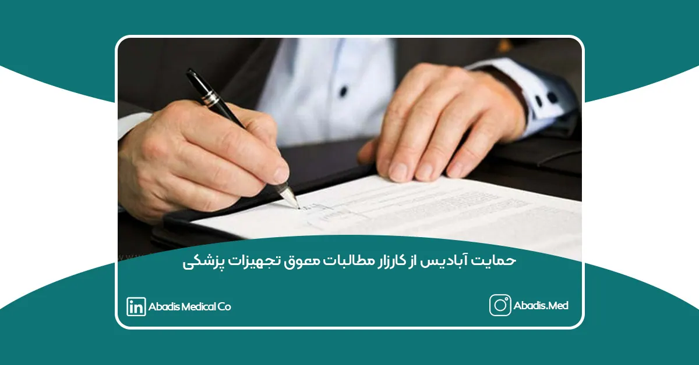
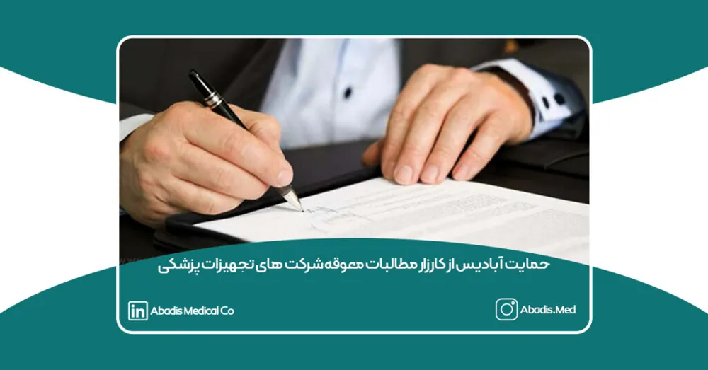
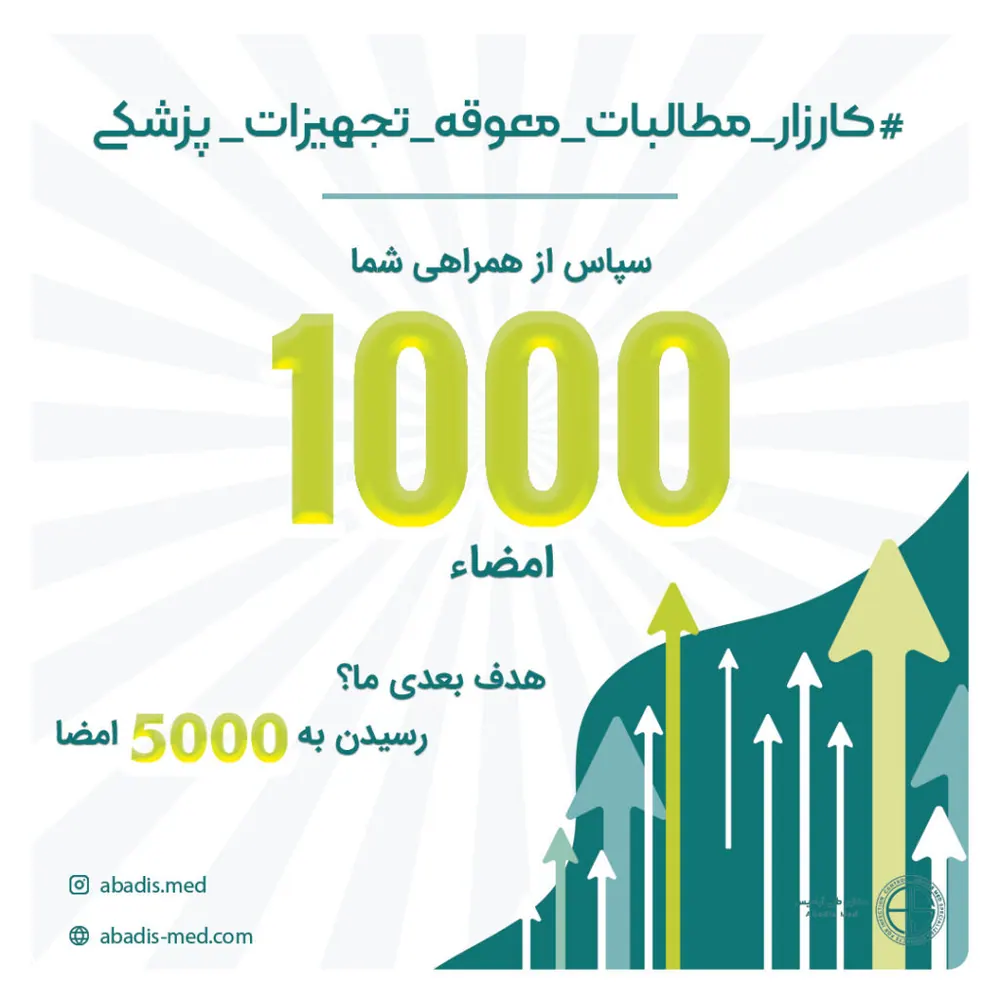
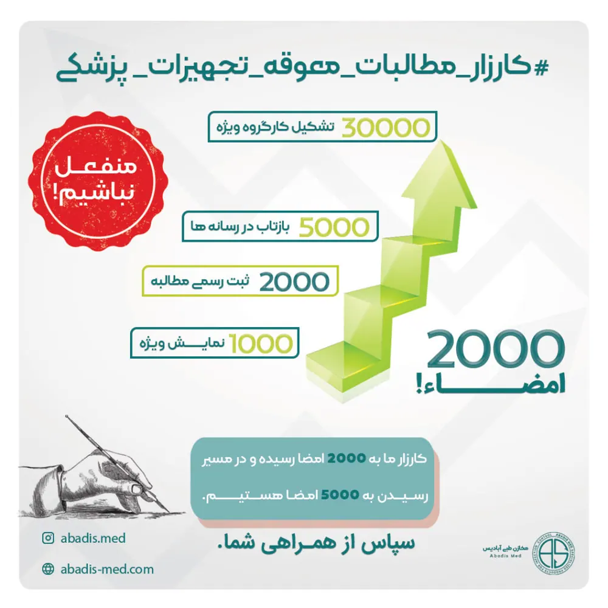

درخواست آبادیس از جامعه صنعت سلامت کشور

همکاران عزیز و ارجمند، مدیران محترم شرکتها، دانشگاهها، هیئت مدیره تمامی تشکلها، پرسنل محترم، رسانههای محترم و تمامی فعالان صنعت سلامت و تجهیزات پزشکی:
صنعت تجهیزات پزشکی، یکی از ارکان حیاتی نظام سلامت کشور است که وظیفه تأمین ابزار و تجهیزات لازم برای نجات جان بیماران و بهبود کیفیت زندگی را بر عهده دارد. اما متأسفانه، شرکتهای فعال در این صنعت به دلیل معوقات انباشته و تأخیر در پرداختها، با چالشهای جدی مواجه هستند که بقای این صنعت را به خطر انداخته است.
اکنون زمان آن رسیده که برای دفاع از حقوق خود و حفظ این بخش حیاتی، یکصدا و متحد شویم. کارزار وصول معوقات شرکتهای تجهیزات پزشکی فرصتی است برای نشان دادن اتحاد و مطالبهگری در جهت احقاق حقوقمان. این اقدام کوچک اما مهم میتواند گامی مؤثر برای اصلاح وضعیت موجود باشد.
ما از شما مدیران محترم شرکتها، رؤسای دانشگاهها، و تمامی فعالان این حوزه دعوت میکنیم تا با امضای این کارزار، صدای جمعی خود را به گوش مسئولان برسانیم. با مشارکت و همبستگی همه ما، میتوانیم برای یکبار هم که شده، یک حرکت ملی و تأثیرگذار انجام دهیم و حق خود را از این مسیر پیگیری کنیم.
این امضا، کوچکترین اقدامی است که میتوانیم برای رسیدن به حقوقمان انجام دهیم. بیایید با هم پشت یکدیگر بایستیم و ثابت کنیم که اتحاد، قویترین ابزار برای رسیدن به اهداف بزرگ است.
از شما خواهشمندیم که این کارزار را امضا کنید و با به اشتراک گذاشتن آن در رسانهها و شبکههای اجتماعی، در گسترش این حرکت سهیم باشید.
برای امضا و حمایت از کارزار به لینک زیر مراجعه فرمایید.

امضای شما چه تأثیری دارد؟
🚀 نمایش ویژه
پس از امضای هزار نفر، این مطالبه برای ۲۴ ساعت در صفحه اصلی کارزار با برچسب ویژه نمایش داده میشود.
🏛️ ثبت رسمی مطالبه
در صورت رسیدن به ۲ هزار امضا، مطالبه شما در دبیرخانه سازمان مورد نظر ثبت رسمی میشود.
📰 بازتاب در رسانهها
با رسیدن به ۵ هزار امضا، خبر مربوط به کارزار به رسانهها ارسال و از مسئولین پیگیری میشود.
📣 تشکیل کارگروه ویژه
با همراهی بیشتر از ۳۰ هزار امضاکننده کارگروهی ویژه تشکیل میشود تا علاوه بر پیگیری مستمر، رویدادی اختصاصی برای همفکری و همافزایی برگزار شود.
✌️ منفعل نباشیم!
تا کنون کارزارهای زیادی موفق شدهاند. اما در صورت عدم موفقیت، حداقل منفعل نبودهایم!

با نهایت احترام و قدردانی، بر خود لازم میدانیم از تمامی مدیران، نیروهای عزیز و همدل شرکتهای تجهیزات پزشکی و نیز تشکلهای صنعت سلامت که در این کارزار ملی همراه و همگام بودند، صمیمانه تشکر کنیم.
این اتحاد و همدلی ارزشمند توانست ما را به نقطهای برساند که این حرکت را به دبیرخانه وزارت بهداشت به ثبت برسانیم.
این حرکت، صرفنظر از نتیجه نهایی، نشاندهندهی وفاق ملی و عزم راسخ خانواده بزرگ تجهیزات پزشکی کشور است.
از این پس، وظیفه ما سنگینتر خواهد شد، چرا که باید با عزمی راسخ و پشتکاری عظیم، حقوق خود را از کسانی که این شرایط اقتصادی را برای صنعت سلامت رقم زدهاند، مطالبه کنیم و تا تحقق این امر از پای ننشینیم.
شروع این کارزار، نقطه عطفی است که ما را به یک هدف مشترک نزدیکتر میکند: همواره یکصدا، متحد و همدل، در کنار مراکز درمانی باشیم و برای ارتقای نظام سلامت کشور و خدمت به بیماران گرانقدر گامهای مؤثری برداریم.
اکنون که توانستهایم به ۲۰۰۰ امضا برسیم، ایمان داریم که به ۵۰۰۰ امضا نیز خواهیم رسید. این دستاورد نشاندهنده عزم جدی صنعت تجهیزات پزشکی کشور است که تا آخرین نفس بتواند با ارائه محصولات با کیفیت مطابق با استانداردهای جهانی در کنار بیماران عزیز باقی بماند.
به امید روزی که اقتصاد کشور به شکوفایی برسد و تمامی مراکز درمانی، با تدبیر، نقدینگی کافی و درایت، در کنار تأمینکنندگان محصولات پزشکی، خدماتی در بالاترین سطح بینالمللی به بیماران ارائه دهند.